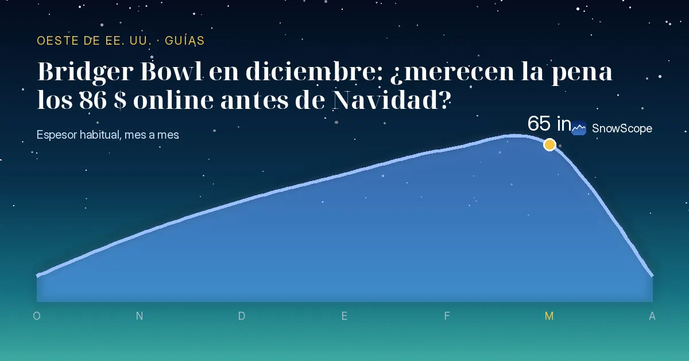
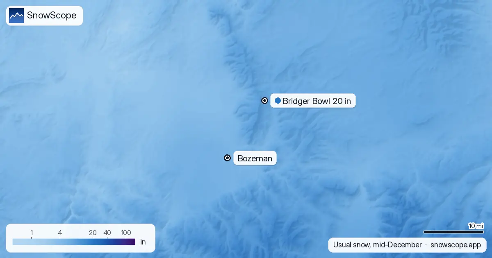

Bridger Bowl en diciembre: ¿merecen la pena los 86 $ online antes de Navidad?
Bridger Bowl, la estación sin ánimo de lucro de Bozeman, tiene una de las tablas de precios más claras de las Rocosas: 86 $ online, 99 $ en taquilla para 2026/27. La pregunta de diciembre es la nieve. Según nuestro historial, media montaña tuvo 20 in (50 cm) el 15 de diciembre en solo la mitad de todos los inviernos.
Consulta la previsión de nieve en tiempo real de Bridger Bowl en la app SnowScopeEspesor de nieve, alertas de nieve polvo y mapa 3D, gratis.
Una montaña, una sola tabla de precios
Bridger está en la Bridger Range al norte de Bozeman, con 12 remontes y unas 26 mi (42 km) de pistas en nuestra cartografía, desde unos 6120 ft (1865 m) hasta 8060 ft (2457 m). La parte alta de la montaña es famosamente empinada, y las laderas bajas son largas y amables.

Lo que cuesta
Para 2026/27, un forfait de día completo para adultos (19-69 años) cuesta 86 $ online y 99 $ en taquilla, sin distinción entre semana y fin de semana. El ticket de tarde, desde las 12:30, cuesta 74 $. El Any Day Pack da tres días no consecutivos sin fechas de exclusión por 230 $.

Por qué finales de diciembre es la apuesta más segura
La nieve duradera llega a media montaña, unos 7090 ft (2161 m), a mediados de octubre en un invierno típico, pero se acumula despacio. Un 1 de diciembre típico tiene allí 15 in (37 cm), el 15 de diciembre 20 in (51 cm), y el día de Navidad 22 in (57 cm).
La proporción de semanas con buena nieve a media montaña es del 37 % en la primera semana de diciembre, 50 % en la segunda, 65 % en la tercera y 78 % en la semana de Navidad. La cima lo hace mejor, con 29 in (73 cm) en un 15 de diciembre típico y el 78 % de los inviernos por encima de 20 in. La base es el punto débil: 12 in (31 cm) en esa fecha.
¿Bridger, Snowbowl o Snow King?
Montana Snowbowl, cerca de Missoula, cobra 78 $ entre semana y 85 $ en fin de semana y tenía 30 in (76 cm) a media montaña en un 15 de diciembre típico, con el 83 % de los inviernos por encima de 20 in. Snow King, en Jackson, empieza en 100 $ y tenía 28 in (71 cm), con el 87 %.
Para un viaje de principios de diciembre, Snowbowl es la mejor apuesta de Montana en cuanto a nieve. Para la semana de Navidad y después, el precio online de Bridger y su terreno empinado tienen sentido.
Antes y ahora
Los primeros 15 inviernos de nuestro registro tenían 29 in (73 cm) a media montaña en un 15 de diciembre típico, con el 67 % por encima de 20 in; los últimos 15 tuvieron 19 in (50 cm), con el 47 %. El invierno pasado tuvo 18 in (45 cm) en esa fecha.
Consejos para esquiadores
- Compra online, nunca en taquilla: 86 $ en lugar de 99 $.
- Usa el Any Day Pack para repartir tres días entre finales de diciembre y enero.
- La Bridger Canyon Road puede estar helada: neumáticos de nieve, y paciencia las mañanas de nieve polvo.
- El terreno de cresta exige equipo de alud y un compañero: comprueba primero el parte de aludes.
Referencias y créditos
- Bridger Bowl, lift ticket pricing 2026/27 (official) bridgerbowl.com/tickets-passes/lift-tickets
- Montana Snowbowl, lift tickets 2026/27 (official) montanasnowbowl.com/sbblog/lift-tickets/
- Snow King Mountain, winter day tickets (official store) store.snowkingmountain.com/en/catalogue/category/500-winter-lift-tickets/510-day-ticket_447/
- OpenSkiMap (mapped lifts and runs) openskimap.org/
- avalanche.org, US avalanche centers and forecasts avalanche.org/
Sobre estas cifras
Cifras de nieve: histórico de nieve de SnowScope, 46 inviernos pasados (1980-81 a 2025-26) en las alturas indicadas (base, media, cima), una reconstrucción de la nieve pasada para una zona corregida por altitud (basada en ERA5-Land; Snow_Hydro 1 km para Marruecos), no los partes de la estación. Nieve actual: el mapa de SnowScope. Remontes, pistas y alturas: cartografía OpenSkiMap. Precios: las páginas oficiales listadas abajo, consultadas el 13 de noviembre de 2026; los precios dinámicos cambian con la fecha y la demanda.
Boletines oficiales de aludes: Gallatin National Forest Avalanche Center
Citar este informe
Para investigación, docencia o prensa: cifras y gráficos reutilizables libremente bajo CC BY 4.0 con esta cita.
SnowScope (2026), Bridger Bowl en diciembre: ¿merecen la pena los 86 $ online antes de Navidad?, https://snowscope.app/blog/es/2026/11/bridger-bowl-bozeman-december-ski-cost.html, consultado el 2026-11-15
SnowScope (Atlas Labs). (2026, November 15). Bridger Bowl en diciembre: ¿merecen la pena los 86 $ online antes de Navidad?. SnowScope snow reports. https://snowscope.app/blog/es/2026/11/bridger-bowl-bozeman-december-ski-cost.html
BibTeX
@misc{snowscope2026bridgerbowlbozemandecemb,
author = {{SnowScope (Atlas Labs)}},
title = {Bridger Bowl en diciembre: ¿merecen la pena los 86 $ online antes de Navidad?},
year = {2026},
month = nov,
howpublished = {\url{https://snowscope.app/blog/es/2026/11/bridger-bowl-bozeman-december-ski-cost.html}},
note = {Published 2026-11-15 09:34 UTC; accessed 2026-11-15}
}· CC BY 4.0 · Métodos, datos y herramientas →
Bridger Bowl: nieve y temperatura según la altura, este invierno vs el pasado (herramientas) →
Sigue Bridger Bowl
Gratis: un aviso cuando llega la nieve y la previsión cada mañana.